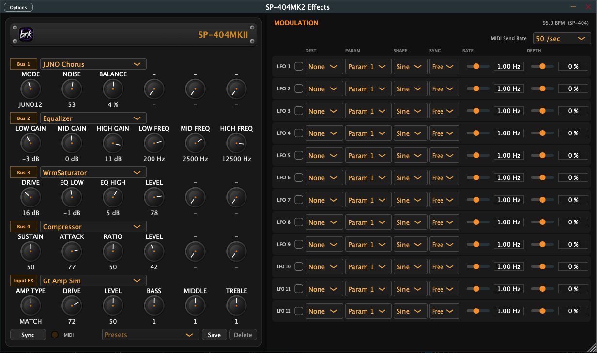

Roland SP-404MK2 — Effects Controller
A dedicated multi-format controller for managing, shaping, and automating every effect parameter on your SP-404MK2 — in real time, from any DAW or standalone.
What it does
All five effect processors — Bus 1–4 and Input FX — mapped to a clean, resizable interface with instant hardware feedback.
Save an entire effects setup — all five stages, every parameter, and your LFOs — and recall it with one click. The SP-404 can't store a full chain; this can.
One button pushes the current UI state directly to your SP-404MK2 over USB — no menu diving, no manual matching.
One online activation on first launch, then never again. No periodic checks, no phoning home, nothing to expire. Good for three machines.
Modulation
Click the SP-404MKII logo to open the modulation panel. Each of the 12 LFOs can target any parameter on any of the five stages, with its own shape, rate, and depth. Run them free in Hz or synced to note divisions — locked to your DAW's tempo in a plugin, or to the SP-404's own clock in the standalone app.

Setup
STEP 01
Plug in via USB-C and open the app. It finds the SP-404MK2 on its own — there is no MIDI device setup to do.
STEP 02
Run standalone for hardware-only sessions, or drop it into Logic, Ableton, Cubase, or any VST3-compatible DAW.
STEP 03
Dial in parameters visually, automate them in your DAW timeline, or drive them live from a MIDI controller.
STEP 04
Hit Sync to push every setting directly to the SP-404MK2. What you see is what you hear.
Formats & Platforms
No DAW required. Lightweight session companion.
Full Windows 10/11 support out of the box.
Works in any VST3-compatible DAW. Full automation support.
Native Audio Unit for Logic Pro. Loads as an audio effect, with every parameter automatable.
What you need: a Roland SP-404MKII and a USB cable that carries data — this is a controller for the hardware's own effects engine, so it does nothing on its own. macOS 12 Monterey or later on Intel or Apple Silicon (the Mac build is universal), or 64-bit Windows 10 or later. An internet connection is needed once, to activate.
Tested with DOOM OS 0.6-alpha, the custom SP-404MKII firmware from Klangfeld Labs. Effects, automation, LFOs, presets and tempo sync all work alongside its sequencer.
FAQ
An SP-404MKII and one USB cable that carries data. Some cables only charge. Nothing else: no MIDI interface, no audio interface, no 1/4" cables.
No. The standalone app controls the SP-404's effects directly, on whatever the 404 is playing: pads, its own sequencer, DOOM OS, or a source plugged into its input. Open the app and it finds the SP-404 by itself.
No. The app finds your SP-404 over USB and talks to it directly. There's no MIDI track, no external instrument and no channel setup.
The SP-404 also works as a USB audio interface, so a track can go out to it, through its effects, and back over the same cable:
The plugin passes audio through untouched, so what you hear is the SP-404's own effects. Every parameter can be automated in your DAW.
Use one instance, on one aux bus, and send whichever tracks you want to it. The SP-404 is a single piece of hardware, so several copies of the plugin would fight over it.
Look under audio effects, not instruments. It's filed under the maker name brkbeats, which some DAWs sort to the bottom of the list.
Yes. It's tested with DOOM OS 0.6-alpha, and it works on the stock firmware too.
Not yet. Mac and Windows only for now.
Pricing
More From Brkbeats
SP-404MK2 Effects Controller is an independent app and isn't affiliated with or endorsed by Roland. SP-404 is a trademark of Roland Corporation. DOOM OS is a project of Klangfeld Labs, also unaffiliated.